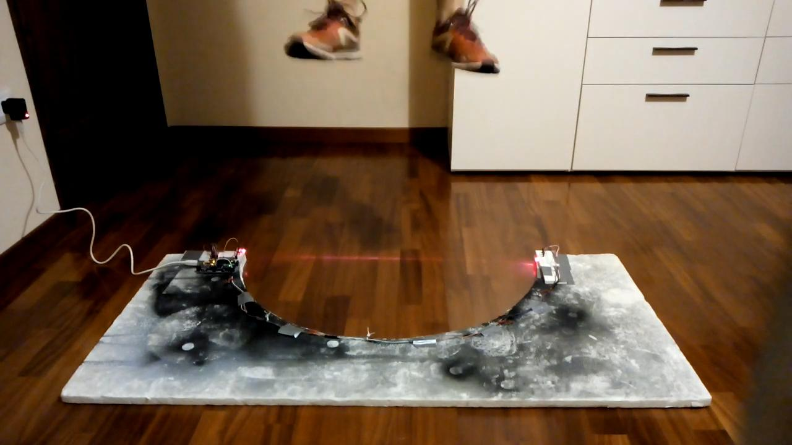

Bosco Test
Bosco tests are designed to assess the morphofunctional characteristics of one's legs muscles as well as their neuromuscular skills. Picture of a Bosco Test in progress.
Video recording of a single jump taken from a Bosco Test in progress.